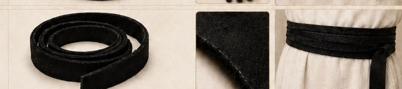
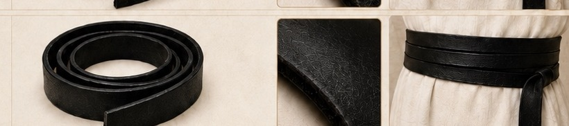
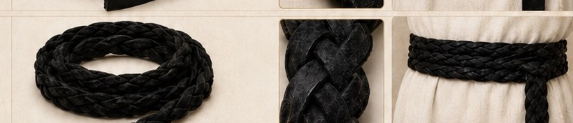
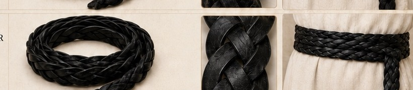
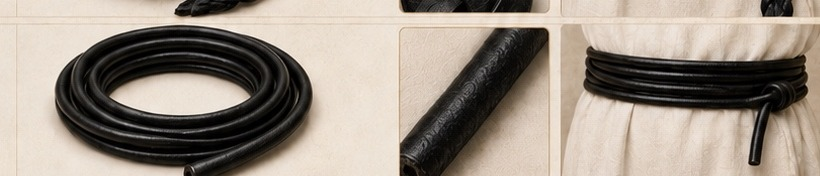

Design 01
Ultra-Thin Multi-Strand Gartel
Suede / Leather
Wrap-and-tuck designs built to stay soft, light, foldable, and easy to carry in a tallis bag.
Suede / Leather

Suede

Leather

Braided suede

Braided leather

Round leather